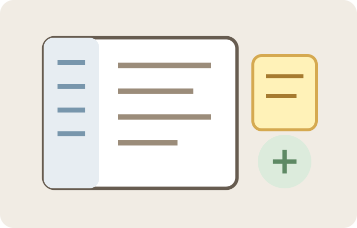

WINDOWS · V29
Factory One 메모센터
빠른 메모·스티커·검색·첨부·전역 단축키를 묶은 Windows 메모 관리 프로그램입니다.
반복 업무를 줄이고 실제 작업에 도움이 되는 Windows 프로그램을 모았습니다. 기능과 사용방법을 확인하고 필요한 프로그램을 선택하세요.


빠른 메모·스티커·검색·첨부·전역 단축키를 묶은 Windows 메모 관리 프로그램입니다.
반복적인 PC 업무를 빠르게 처리합니다.
폴더와 파일을 규칙에 따라 정리합니다.
도면 작업에 필요한 보조 기능을 묶었습니다.
각 항목을 선택하면 기능 설명, 사용방법, 버전과 다운로드 정보를 자세히 확인할 수 있습니다. 앞으로 새 항목이 추가되어도 같은 카드와 상세페이지 구조로 자동 정리됩니다.